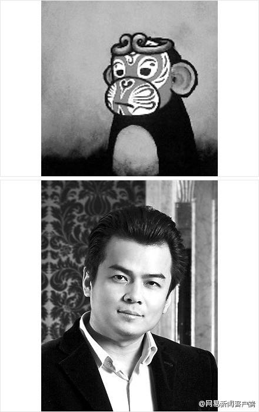

以后CTO俱乐部会员的线下聚会，要多借用这类技术大会的时机。平时大家都很忙，CTO们能抽出时间参加技术大会，专业上可以充充电，人脉上也可以多结识些人。跑一趟不容易，只在会场听讲就有些浪费时间了哈。@CTO俱乐部:欢迎报名参加#CTO俱乐部# 晚宴：畅谈网络安全。9月23日互联网安全大会将在京举行，CSDN作为首要协作伙伴，希望借此时机举办安全领域会员的小型晚宴，将邀请CSDN&《程序员》杂志@刘江总编 、以及安全领域会员共进晚餐话安全，欢迎报名参加。@蒋涛CSDN @Ada李力 - 会议 - CSDN.NET 网页链接
#社区运营#社区运营人员的工作指标都是和人有关，比如用户数，用户粘性，用户质量等等。但说到社区运营人员的工作重心是什么，则莫衷一是了。有些是当BD用，有些是当网络编辑用，有些是当客服用，我会告诉你CSDN的产品运营人员还当测试用吗？- 我发现我还得去了解了解产品经理是怎么当的了。
#社区运营#@CSDN张媛 的文章《 产品运营的价值系列之一：内容建设 》。被很多网站转载，还 被改了名字，“产品运营入门谈：如何做内容建设？ ” 就是不加原文链接啊。人在旅途 - 博客频道 - CSDN.NET 网页链接
@陈果_George //@汤子渊: 世界奢侈品协会中国区主席、贸促会中国奢侈品贸易委员会秘书长，商务部特约专家、多家奢侈品集团特邀研究员、北京电视台特约首经评论员。@网易新闻客户端:【因频鉴定高官名表走红的“花总”已被警方控制 涉传谣】消息称，因鉴表知名的网友@花总丢了金箍棒 与外界失去联系。欧阳坤称，他已接到北京警方的电话通知，让他作为受害人指证花总。欧阳坤称，花总涉及多起网络谣言，已被警方控制，他只是受害者之一。警方尚未证实上述消息。网页链接 